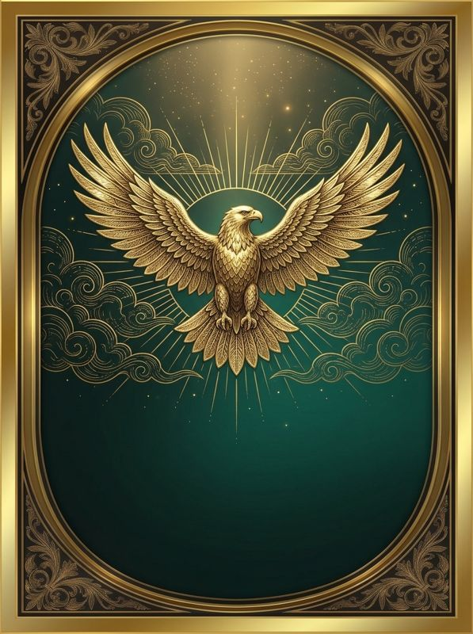

四福音
和合本
切換深淺色
今日經文
正在載入經文…
閱讀本章
播放音樂
--
每日禱讀
今天的禱讀
開始今天的禱讀 →
抽經文卡
抽一張卡，領受今天的祝福
37 張收藏卡 →
搜尋四福音
搜尋
樣本只搜尋下方閱讀頁樣本的 8 節經文。
樣本二
閱讀頁
3
共
–
節
約翰福音
樣本三
每日禱讀
今天的禱讀
默想
反思
禱告
樣本四
操作回饋的三種狀態
搜尋中…
處理中
轉圈圖示加上「…中」的文字；按鈕暫時不能重複按。
找到 3 節
已完成
打勾圖示加上結果文字，說明完成了什麼。
請先輸入要找的字句
待修正
方形驚嘆號加上「怎麼修」的文字；欄位改成虛線粗框。
樣本五
經文卡卡面：金色飛鷹（兩張都用）

A 卡背徽章風
深河綠底、燙金飛鷹。用在抽經文卡：抽卡前的卡背，以及入口方塊的外側兩張。
B 水彩風
晨光雲海上的飛鷹。用在「經文卡片」頁的卡面，以及入口方塊中間那一張。
首頁
目錄
禱讀
抽卡
搜尋